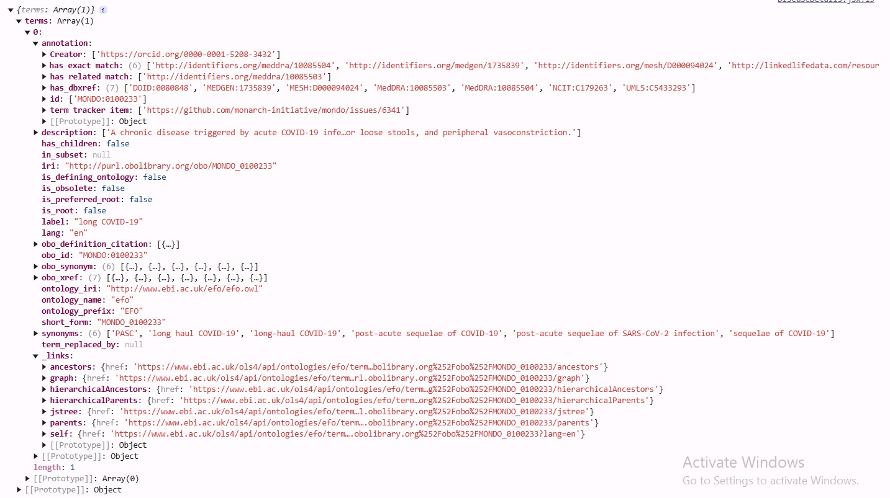

Exercise - 1: Realworld Project (Disease Ontology Exploration)
Approach
-
Research and gathering resources
- Did research what exactly I have to build.
- Viewed the requirements with the perspective of a user.
- Gathered resources needed for the task/site. There was already an API which was providing all these details.
- Found that it provides all the parents and childrens of the disease in the response itself. Used it to construct the disease tree. Other Addons
- Used Gemini API to fetch relevant data about the disease, such as : causes, precautions, diagnosis and many more.
- Look for the Disease
- Check what are all the other disease related to it
- Get an understanding of the disease
- Gather other names of the disease
- Have a look at the hierarchy of the disease and pin point his current situation
- diagnosisGet general insights about the disease such as: causes, complications, precautions, symptoms etc.

Note: Hit the try again button if the details about the disease isn't loaded.
User can perform the following tasks.
Website
UI/UX


LLM Links
- Vercel
- Sorry, Chatgpt link wasn't available because I have used images in my chat